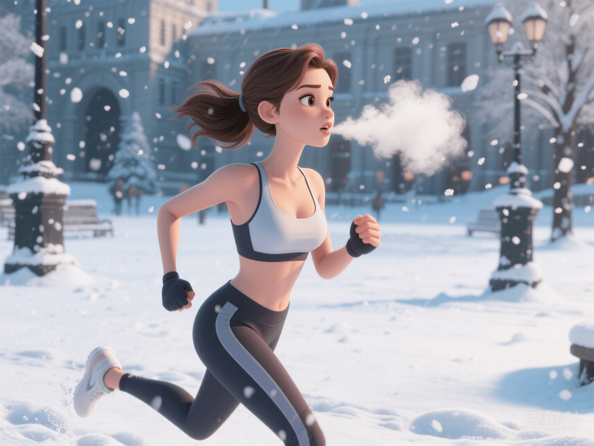

Cold Exposure: A New Skill for Fat Burning?
PeaceLove.Top Insights :2025-04-12
👋 Introduction
Hello, dear health enthusiasts! Today, we're going to talk about a rather 'chilly' topic - cold exposure. Don't think that just because it's cold in winter and you want to stay in bed all day. In fact, the cold could be your secret weapon for weight loss! 🔥
❄️ What is Cold Exposure?
Cold exposure refers to engaging in activities or staying in a low - temperature environment for a period of time. This kind of exposure can activate our body's brown adipose tissue (BAT), thereby increasing energy consumption. Unlike white fat, which is used for fat storage, brown fat has a magical ability - it can burn fat to generate heat and help maintain body temperature.
🔬 Research on Cold Exposure and Brown Fat Activation
💡 Experimental Data
- Experiments have found that exposing oneself to a 15°C environment for 2 hours every day can increase extra energy consumption by 200 calories!
- This means that cold exposure not only helps you stay warm but also allows you to burn extra fat without any additional exercise.
- Brown fat acts like an 'internal combustion engine', accelerating fat oxidation to generate heat.
Why Does Low Temperature Activate Brown Fat?
- The main function of brown fat is to generate heat, which is a natural response for animals and humans to combat cold environments.
- Low temperature triggers the body's thermoregulatory mechanism. By activating brown fat, stored energy is converted into heat to prevent the body temperature from dropping too low.
- At this time, brown fat acts like a'small heat engine', burning stored fat to release energy.
⚡ Metabolic Advantages of Cold Exposure
1. Increase Energy Consumption
As mentioned above, a cold environment can stimulate the activity of brown fat, increasing daily extra energy consumption.
2. Promote Fat Burning
Different from white fat, the 'burning' ability of brown fat can effectively improve the metabolic rate and help reduce the body's fat reserves.
3. Improve Insulin Sensitivity
Cold exposure can improve blood sugar control and fat metabolism, helping to prevent type 2 diabetes.
🧠 Physiological Mechanisms of Cold Exposure
Cold exposure activates the sympathetic nervous system and brown fat simultaneously, making fat cells more active at lower temperatures. The specific mechanisms are as follows:
- Low - temperature stimulates the body to release noradrenaline, which can activate brown fat and promote fat decomposition.
- Brown fat cells contain a large number of mitochondria. The uncoupling protein (UCP1) in these mitochondria can release heat through the uncoupling of the oxidative phosphorylation process, helping to regulate body temperature.
- In this way, stored fat is converted into heat and consumed.
🚶♂️ How to Activate Brown Fat through Cold Exposure?
1. Cold Water Bath or Cold Shower
Exposing the body to a low - temperature water environment helps activate brown fat and increase energy consumption.
2. Outdoor Exercise
Doing outdoor exercise in winter or cold weather can not only improve metabolism but also activate brown fat.
3. Wear Light Clothing
You can appropriately wear light clothing in winter to increase the intensity of cold exposure.
4. Cold Environment
In daily life, staying in a low - temperature environment for about 2 hours (such as keeping the room temperature at around 15°C) can also produce similar effects.
⚠️ Precautions
Although cold exposure is beneficial for metabolism, it should be done moderately. Avoid over - exposure to extremely low - temperature environments to prevent cold injuries or other health problems.
- Unsuitable Groups: People with high blood pressure, heart disease, pregnant women, etc. should pay special attention, as cold exposure may have an adverse impact on their bodies.
- Gradual Adaptation: For those who are trying cold exposure for the first time, it is recommended to start with a short - time cold water soak and gradually increase the exposure time to avoid over - burdening the body.
📈 Summary: Cold Exposure - The 'Frozen' Way to Burn Fat ❄️🔥
The theory that cold exposure activates brown fat has been scientifically verified through multiple experiments and is gradually becoming a new direction for metabolic regulation. Through appropriate cold exposure, we can not only promote fat burning but also improve the metabolic rate, help with weight loss, and even improve insulin sensitivity.
As long as we reasonably arrange the time of cold exposure and combine it with a healthy diet and exercise, we can accelerate fat burning while keeping warm! Are you ready to take on the 'cold exposure challenge'? 💪